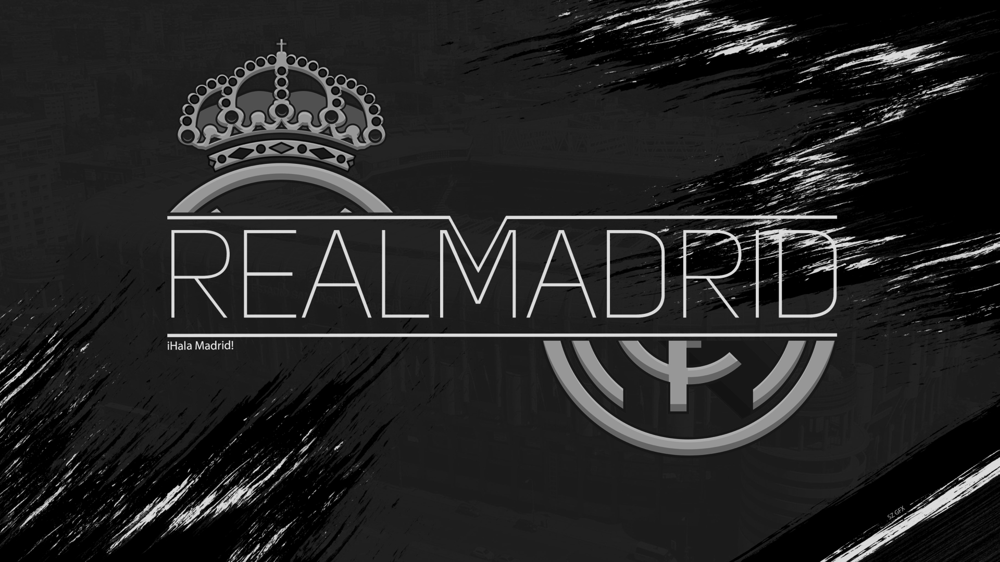

Real Madrid adalah salah satu klub sepak bola paling sukses dan populer di dunia. Tapi bagaimana semuanya dimulai? Ayo cari tahu.

FC Barcelona adalah salah satu klub sepak bola paling terkenal
dan sukses di dunia. Tapi seberapa banyak yang Anda ketahui tentang
jerseynya?

FC Bayern adalah raksasa sepak bola global dan ikon budaya Jerman. Ini mewakili nilai-nilai, sejarah, dan identitas bangsa.